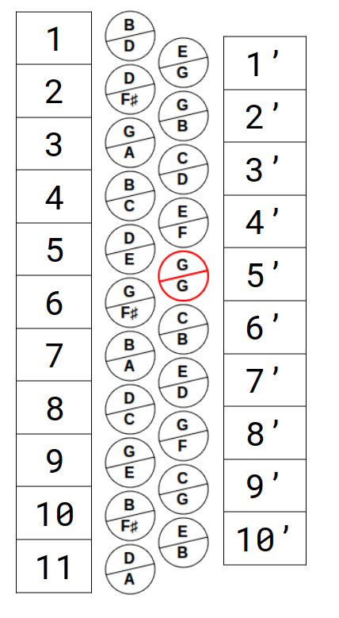

Usando la descripción del formato de la tablatura del párrafo anterior y considerando solo los botones de la melodía (mano derecha), la numeración sería así:

Tablaturas para Acordeón Diatónico
La tablatura para acordeón diatónico representa una herramienta valiosa y accesible para la iniciación musical, especialmente para aquellos sin formación tradicional en lectura de partituras. Antes de abordar las especificidades y beneficios de la tablatura para este instrumento peculiar, es importante comprender qué significa y cómo se diferencia de la notación musical convencional.
¿Qué es una Tablatura?
La tablatura es una forma alternativa de notación musical destinada a simplificar el aprendizaje de un instrumento. A diferencia de las partituras tradicionales, que requieren el conocimiento de notación musical para interpretar las notas y ritmos, la tablatura proporciona indicaciones directas sobre cómo tocar el instrumento. En el contexto del acordeón diatónico, esto implica indicar qué botón debe ser presionado y, en algunos casos, si el fuelle debe estar abierto o cerrado.
La Especificidad del Acordeón Diatónico
El acordeón diatónico se distingue de otros instrumentos, como el piano, por su organización única de las notas. Mientras que el piano presenta una secuencia lineal de notas, de grave a agudo, el acordeón diatónico organiza las notas de manera menos intuitiva para el principiante. Esta característica hace que la tablatura sea particularmente útil para este instrumento, ya que puede guiar al aprendiz sobre qué botón presionar sin la necesidad de entender la compleja disposición de las notas en el instrumento.
Limitaciones de la Tablatura
A pesar de sus ventajas en la facilitación del aprendizaje inicial, la tablatura para acordeón diatónico tiene limitaciones. Una de las principales es la ausencia de indicación sobre la duración de las notas. Mientras que la partitura tradicional proporciona una comprensión completa de la pieza musical, incluyendo ritmo y dinámica, la tablatura se enfoca principalmente en la ubicación de las notas. Esto significa que la interpretación musical y la expresividad pueden verse comprometidas si el músico depende exclusivamente de la tablatura.
Otro aspecto es que la tablatura se genera, particularmente, para cada instrumento. Por ejemplo, supongamos que exista una nota "Sol" en una dada partitura. La tablatura indicará exactamente qué botón debe ser presionado en este instrumento, digamos, el quinto botón de la hilera interna. Si cambiamos de instrumento, puede ser que la misma nota "Sol" esté presente en una posición completamente distinta o puede ser que ni siquiera exista en este nuevo instrumento.
Diversidad y Desafíos de los Modelos de Tablaturas
La tablatura se destaca por su lenguaje simplificado, una alternativa menos formal a la notación convencional que se encuentra en las partituras. Esta simplicidad permite que los modelos de tablatura asuman formas variadas, reflejando la flexibilidad y adaptabilidad de este sistema de notación. Aunque esta variedad trae consigo la ventaja de descentralizar el proceso representativo, haciendo que las tablaturas sean potencialmente más accesibles para diferentes estilos de aprendizaje, también puede introducir desafíos significativos. La diversidad de formatos, aunque refleja la personalización del aprendizaje, puede complicar el intercambio de información entre músicos. Cada variación de tablatura, siendo única para el instrumento o para la preferencia individual del músico, puede no ser inmediatamente comprensible para otros, requiriendo un período de adaptación o incluso la búsqueda de un denominador común en términos de representación gráfica y símbolos utilizados.
Importancia de la Estandarización
La estandarización de elementos básicos en las tablaturas puede ser una solución eficaz para facilitar la comunicación y el intercambio de piezas musicales entre músicos de diferentes escuelas. Se propone la creación de un conjunto de directrices o símbolos universales que permitan la representación clara de acciones específicas, como la dirección del fuelle en el acordeón diatónico, la numeración de los botones y las hileras, además de la forma de representar los botones de los bajos, entre otros. Este enfoque mantendría la naturaleza accesible y descomplicada de las tablaturas, al mismo tiempo que proporcionaría una base común para mejorar significativamente el intercambio de información musical. Es importante destacar que esta estandarización no eliminaría la personalización y la flexibilidad, características que hacen que las tablaturas sean especialmente atractivas para los músicos.
Formatos de Tablatura Utilizados
Nota sobre los bajos:
En nuestro proyecto, para cualquier formato de tablatura, los bajos siempre se representarán mediante el "Sistema de Cifrado". Entendemos que, cuando se trata de acordeones diatónicos, estamos hablando de un número bastante reducido de botones en los bajos (generalmente 8 o 12), lo que los hace fáciles de memorizar. Algunos sistemas de tablaturas numeran tanto las líneas de la melodía (mano derecha) como las líneas de los bajos (mano izquierda).
Otra particularidad de los botones de los bajos es que pueden representar notas individuales o acordes (que pueden ser mayores o menores). Para estas representaciones adoptamos los siguientes patrones:
Nota de bajo: Letra mayúscula - por ejemplo, Nota “La”, letra “A”
Acorde mayor: Letra minúscula - por ejemplo, Acorde “La mayor”, letra “a”
Acorde menor: Letra minúscula y guion - por ejemplo, Acorde "La menor”, letra “a-”
En nuestro "Mapa para Acordeones Diatónicos", hemos elegido 3 formatos distintos para ofrecer algunas opciones diferentes a quienes están aprendiendo el instrumento y, al mismo tiempo, no crear demasiadas diferenciaciones. Estos son:
Formato Alemán
Formato Numérico Cíclico
Formato Numérico Contínuo
Nota: Para cada uno de ellos pueden existir variaciones, como explicaremos a continuación.
Formato Alemán
A este formato lo llamamos "Formato Alemán" porque ha sido derivado de las enseñanzas de Yann Dour, en su libro "Schule für Diatonisches Akkordion – Band 1". Esencialmente, los botones en cada fila (línea) están numerados, de arriba hacia abajo, es decir, desde el mentón hacia las rodillas, del 1 hasta "n", donde "n" representa el último botón de la fila. Para diferenciar las filas se utilizan apóstrofos "'", donde la primera fila (la más externa) no lleva ningún apóstrofo; la segunda fila lleva un carácter; la tercera fila lleva dos caracteres "''" y así sucesivamente, añadiendo un apóstrofo extra a cada nueva fila.
Considere el diseño de teclas de un determinado acordeón, como se muestra en la imagen a continuación y a la izquierda:
Usando la descripción del formato de la tablatura del párrafo anterior y considerando solo los botones de la melodía (mano derecha), la numeración sería así:
Esta forma de numerar los botones es muy intuitiva y se puede aplicar a cualquier acordeón. Observando aún la imagen anterior, también es perceptible la nomenclatura usada en los botones de bajos (mano izquierda), con sus notas (letras mayúsculas), sus acordes mayores (letras minúsculas) y, en el caso, un único acorde menor, La menor, representado por "a-".
Los botones de la melodía (mano derecha) siguen la misma nomenclatura, con la diferencia de que aquí solo hay notas individuales, por lo tanto, todas se representan con letras mayúsculas.
En la tablatura, utilizaremos los números (con o sin apóstrofos) para representar las notas de la melodía y las letras del "Sistema de Cifrado" para la representación de los bajos.
Bissonoridad
Resta mapear aún una característica fundamental del acordeón diatónico. La bissonoridad, es decir, la funcionalidad que cada botón tiene de emitir dos sonidos diferentes: abriendo el fuelle suena una nota o acorde y, cerrando el fuelle, suena otra diferente.
En nuestro Mapa, usamos círculos bipartidos para representar los botones del acordeón. Siempre, la mitad superior del botón representa la nota (o acorde) cuando se cierra el fuelle y la mitad inferior, la nota (o acorde) que suena al abrir el fuelle.
Finalmente, La Tablatura: Juntando todo
Ahora que ya aprendimos a numerar los botones de la melodía; que sabemos cómo representan los bajos, vamos a ver cómo uniremos esto todo en la tablatura.
La tablatura para acordeón puede ser bien representada por una tabla con 3 líneas:
En la línea superior se representan los bajos (mano izquierda).
En la segunda y tercera líneas se muestran los botones tocados con la mano derecha, siendo que, la segunda línea muestra qué botones deben ser presionados con el fuelle cerrando y, la tercera línea, los botones presionados con el fuelle abriendo.
Las líneas verticales representan las barras de compás.
A pesar del diseño simple, muchas informaciones son representadas simultáneamente. Note que, en el ejemplo anterior, tenemos la representación de dos compases.
En el primero de ellos, se tocan los bajos de Sol (G y g), respectivamente, la nota Sol y el acorde Sol Mayor, mientras se presiona el botón número 6 de la primera hilera (externa), con el fuelle cerrando.
El segundo compás indica la ejecución de los bajos de Re (D y d), respectivamente la nota Re y el acorde Re Mayor, también presionando, simultáneamente, el botón botón número 6 de la primera hilera (externa), con el fuelle abriendo.
En el sitio web, una tablatura similar a la del ejemplo anterior, será mostrada así:
La principal diferencia aparece en la primera columna a la izquierda: usamos la palabra “Bass” para identificar la línea de los bajos (mano izquierda) y las líneas de la melodía (mano derecha) las identificamos por el símbolo “TAB”, agregando el símbolo “>><<” para identificar la línea cuando el movimiento de fuelle es cerrando y el símbolo “<<>>” para identificar la línea que muestra el fuelle abriendo. Por lo demás, cada compás será separado por la barra vertical y contendrá tantas columnas como sean necesarias.
Formato Alemán – Ilheiras numeradas
Hasta aquí, hemos descrito el modelo básico de tablatura que adoptamos en este proyecto. Vamos a agregar una pequeña variación: en vez de marcar las ilheiras con apóstrofes, vamos a numerarlas, partiendo de la ilheira externa, que será el número 1, contando de forma creciente, hasta n, cuando más interna sea la ilheira. Quedaría así:

En este nuevo modelo, el mismo ejemplo de tablatura anterior se representa así:
Note que en vez del apóstrofe, usamos un índice numérico para representar la ilheira.
Formato Numérico Cíclico
Este nuevo formato, que llamamos Numérico Cíclico, elimina la necesidad de numerar las filas porque están numeradas comenzando cada una por una década diferente. Por supuesto, las filas pueden tener más de 10 botones, lo que causaría la repetición de números de botón. Esto, de hecho, sucede, pero puede ser superado con algún truco, como agregar un carácter adicional para diferenciar los botones con números repetidos.
Para este nuevo formato, además de cambios en la tablatura, el propio mapa del diseño del teclado se mostrará de manera diferente. Tendremos dos variantes, que llamaremos formato numérico cíclico con notas o solo números, así:


Las figuras anteriores muestran las dos variantes de este formato: en la figura izquierda, los nombres de las notas permanecen, sin embargo, se agregan miniaturas indicando la numeración; en la segunda variante (a la derecha), los nombres de las notas desaparecen del diseño del teclado, dejando solo los números.
En el ejemplo anterior, también es posible ver que fue necesario desambiguar el botón 11, que ocurre al final fila externa, de aquel que inicia la segunda fila (interna). Se usó la letra "A" para diferenciarlos. Tenga en cuenta que esta misma letra también aparecerá en la tablatura, si el botón en cuestión se usa en la música.
La tablatura, a su vez, permanecerá así:
Formato Numérico Continuo
El tercer (y último) formato que presentamos fue inspirado en la numeración que algunos fabricantes usan para diferenciar los botones.
Comenzando desde el botón más externo, en la parte superior, se cuenta del 1 al "n", siendo "n" el último botón de la fila más interna. Así, se elimina la necesidad de usar caracteres adicionales para diferenciar botones, pero, como el formato numérico cíclico, en este formato también pueden aparecer algunos problemas dependiendo de los diseños de teclado. Para resolver estas dificultades en la identificación de cada botón, el mapa del teclado tendrá que mostrarse de manera diferente nuevamente, así:


Este formato es muy similar al anterior, pero algunos cambios son visibles. Tenga en cuenta que no hay duplicidad en el botón 11, sin embargo, la segunda fila comienza con el número 12. Observe el segmento de la tablatura que (es el mismo que el ejemplo anterior) y note que la nota "G" ahora se cuenta como botón 16 (antes era el número 15).

Otros Elementos de la Tablatura
Como se ve en el extracto de la tablatura anterior, pueden aparecer algunos elementos adicionales.
En la primera medida, por ejemplo, no hay sonidos graves; solo suenan notas de la melodía, representadas por 2 toques en el botón 16. Tenga en cuenta que, en el primer tercio de la medida, no hay ningún sonido (es una pausa). Por lo tanto, para representar la pausa, se usó una barra, similar a un guion "–".
Otro elemento muy común es el símbolo de continuidad sonora. Por ejemplo, en la segunda medida, el acorde La menor "a-" comienza con la nota del botón 16 y debe durar durante la ejecución de esta nota y la próxima (botón 15). Una flecha "→" se usa para representar esta continuidad. Es decir, se toca el acorde La menor junto con la nota 16 y esto se mantendrá hasta que termine el tiempo de la nota 15.
Sistema de Cifrado
El "Sistema de Cifrado" es una convención reconocida globalmente para la notación de acordes musicales, utilizada para simplificar la lectura y el intercambio de composiciones musicales entre músicos de diferentes idiomas y culturas. Este sistema utiliza letras del alfabeto latino para representar los acordes, acompañadas por números y símbolos que indican modificaciones, como acordes menores, aumentados, disminuidos y otras variaciones.
Aquí, en el Mapa, utilizamos esta convención para representar no solo los acordes, sino también las notas musicales. Como sabemos, los monosílabos indicadores de la altura del sonido fueron introducidos por Guido d’Arezzo, se utilizan predominantemente en países de habla latina y corresponden a las siete letras (sistema alfabético introducido por el Papa Gregorio I, en el siglo VI) utilizadas en inglés, alemán, griego, etc. Ellos son:
| Dó | Ré | Mi | Fá | Sol | Lá | Si | |
|---|---|---|---|---|---|---|---|
| Inglés | C | D | E | F | G | A | B |
| Alemán | C | D | E | F | G | A | H |
Nota: En inglés, la letra "B" representa la nota "Si"; en alemán, la letra "B" representa la nota "Si bemol" y el "Si" se representa por "H". En este proyecto, consideramos la nomenclatura inglesa.
Los números y símbolos se utilizan para indicar alteraciones específicas en los acordes básicos, como 7 (séptima), m (menor), o # (sostenido), entre otros. Sin embargo, los acordeones diatónicos de 8 o 12 bajos tienen solo acordes mayores y menores. Como mencionamos anteriormente, aquí utilizamos letras mayúsculas para representar notas y letras minúsculas para los acordes. Cuando se trata de acordes menores, optamos por el guion "-" en lugar de la letra "m".
Los diseños de teclado pueden mostrarse utilizando tanto la convención inglesa como los nombres latinos de las notas, así: